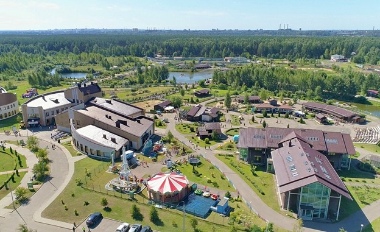

Интерактивная карта достопримечательностей Заволжского района
Ярославский зоопарк

Cправочная информация
Ярославский зоопарк – первый в России ландшафтный зоопарк, который открыт в естественном сосновом бору. Здесь на территории площадью более 120 гектаров содержится свыше 1650 животных 250 видов со всех континентов планеты. Зоопарк работает круглый год и предлагает уникальную возможность увидеть животных в условиях, максимально приближенных к их естественной среде обитания.
Основная особенность ярославского зоопарка - его расположение в естественном сосновом бору. Территория не была вырублена под строительство, а органично вписана в существующий ландшафт. Вольеры размещены между деревьями, сохраняя природную атмосферу леса.
Животные содержатся в условиях, максимально приближенных к дикой природе. Большие территории позволяют им вести активной образ жизни.
Посетители наблюдают за животными через стеклянные ограждения или сетки, практически не мешая их естественному поведению.
Животные
В зоопарке представлено большое разнообразие животных:
Хищники
В зоопарке представлены самые крупные хищники планеты. Амурские тигры живут в просторных вольерах площадью несколько тысяч квадратных метров. Африканские львы содержатся в отдельной экспозиции с естественными укрытиями.
Медведи разных видов - бурые, гималайские и белые - занимают обширные территории с водоемами и берлогами. Волки живут стаей в условиях, максимально приближенных к дикой природе.
Копытные животные
Коллекция копытных включает как экзотических, так и местных животных:
Зубры – символ российской фауны
Благородные олени и косули
Зебры и антилопы разных видов
Верблюды и ламы
Приматы
Обезьяний комплекс представляет приматов со всех континентов. Здесь живут орангутаны, макаки, игрунки и другие виды.
Водные животные
Байкальские нерпы - главная гордость водной экспозиции. Для них построен современный комплекс с большим бассейном и системой очистки воды. Посетители могут наблюдать за нерпами через стеклянные стены как над водой, так и под водой.
Зооэкзотариум
Отдельный павильон с рептилиями, амфибиями и беспозвоночными. Здесь представлены редкие виды змей, ящериц, черепах и пауков со всего мира.
Птичий комплекс
Включает как открытые вольеры, так и закрытые павильоны. Здесь можно увидеть хищных птиц, водоплавающих, экзотических попугаев и какаду.
Дополнительные развлечения и услуги
Зоопарк предлагает разнообразные развлекательные программы:
Экскурсии с профессиональными гидами
Мастер-классы по уходу за животными
Образовательные программы для школьников
Конные прогулки в специальной зоне
Веревочный парк для активного отдыха
Стоимость билетов:
ЕДИНЫЙ БИЛЕТ НА ВСЕ ЭКСПОЗИЦИИ (Основная территория+Зооэкзотариум+Парк копытных+Зона отдыха Альпака парк+Ковчег):
Взрослый (с 14 лет) - 1200 руб.
Детский (с 4 до 14 лет) - 600 руб.
Дети до 4 лет – Бесплатно
ОТДЕЛЬНО НА КАЖДУЮ ЭКСПОЗИЦИЮ И ЗОНУ ОТДЫХА:
ОСНОВНАЯ ТЕРРИТОРИЯ + КОВЧЕГ
Взрослый (с 14 лет) - 600 руб.
Детский (с 4 до 14 лет) - 400 руб.
Дети до 4 лет – БЕСПЛАТНО
«ЗООЭКЗОТАРИУМ»
(При покупке билета на основную территорию)
Взрослый (с 14 лет) - 300 руб.
Детский (с 4 до 14 лет) - 200 руб.
Дети до 4 лет – БЕСПЛАТНО
«ПАРК КОПЫТНЫХ»
(Поездка в конном экипаже/санях или электромобиле)
Посадочное место - 300 руб.
ЭКСПОЗИЦИЯ «НЕРПЫ»
(Демонстрация экспозиции с тренингом и показательным кормлением нерп (продолжительность - 20-25 минут)):